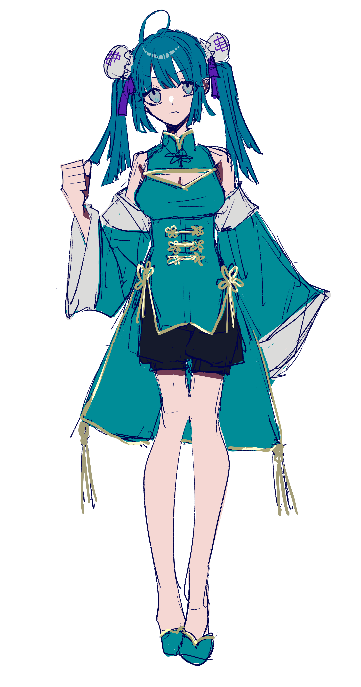

性格
どこにでもいるような素直で明るく純粋な若い少女。まだ世間の厳しさや辛苦を知らず、のほほんと楽しく毎日を送っている。あまり細かいことは考えず、与えられた指示も意図等を吟味しないで実行することがほとんど。他人との関わりにおいても、誰かを疑うことはほとんどしない。
仕事について
レイの指示、もしくは誘導により呑紅街のスラム周辺の下町にて飲食店を営んでいる。彼女が提供しているメニューの全てには微量の薬が含まれている。これは蒼殉街が現在開発中の新薬であるが、彼女自身はそのような裏側の意図は一切知らない。
過去
レイの13人目の娘として誕生した。彼女が生まれた段階では姉があと5人生きていたが、全て何らかの形で彼女の前から消えている。現在においては彼女がレイの娘たちの長女であり、下に3人の妹がいる。
彼女たちだけは、蒼殉街の中で特に学校に通うこともなく自由に行動することを許されていた。彼女たちに求められているのはただ一つ。命令が下された時に、それに従順に従うことである。
能力
レイによって極端に人当たりの良い人格になるように育てられた。その明るい雰囲気は他人から毒気を抜く。また、細かいことを考えずに楽しく毎日を過ごせるのはある意味特殊な技能であるのかもしれない。